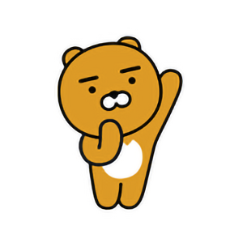

사람과 세상, 그 이상을 연결하는 카카오톡!
카카오톡 간편 회원가입 후, 카카오 프렌즈 캐릭터들을 만나보세요!
라이언(RYAN)
기존의 카카오프렌즈와 다소 이질감이 있다는 초기의 평가가 무색하게, 귀여운 외모로 출시와 동시에 폭발적인 인기를 끌고 있다. 특히 젊은 여성들에게 엄청난 인기를 끌고 있다. 핸드폰 케이스 같은 경우 라이언 추가 직후 발매된 케이스가 품절돼 구하기도 힘든 편이었으나, 물량이 충분히 확보되었는지 기간 한정 제품 외에는 쉽게 구할 수 있다. 기존 제품 외에도 꾸준히 크리스마스나 발렌타인 데이 한정판 제품, 콜라보 제품이 출시되고 있다.
어피치(APEACH)
Secret Forest의 복숭아 나무에서 유전자 변이로 태어난 어피치. Secret Forest의 풍부한 햇살을 받아 유독 돋보이는 분홍색을 띱니다. 복숭아 나무에서 탈출한 뒤, Friends City에서 맨 처음 튜브를 만나게 됩니다. 튜브와의 인연으로 Friends City에서 어피치는 다양한 친구들을 만나며 흥미로운 경험을 하게 됩니다. 섹시한 뒤태와 아름다운 분홍빛을 무기로 친구들을 유혹해 보지만, 본능적인 장난기 때문인지 친구들은 항상 어피치를 경계합니다.
튜브(TUBE)
발이 작아 소심한 오리 튜브. 겁이 많고 소심한 성격이라 복잡한 도시 생활보다는 Friends City 외곽에서 한적한 전원 생활을 즐기고 있습니다. 발이 작은 컴플렉스 때문에 오리발을 신게 된 이후로 어느덧 오리발 매니아가 된 튜브는 오리발 쇼핑을 위해 종종 Friends City를 방문합니다. 그러던 중 우연히 만난 어피치에게 다른 친구들을 소개하기 위해 Friends City로 여행을 다닙니다.
무지&콘(MUZI&CON)
카카오톡에서 토끼옷을 입고있는 단무지 캐릭터, 무지. 그리고 카카오톡에서 무지와 함께 붙어있는 조그마한 악어, 콘. 무지와 콘이라는 이름은 워낙 카카오톡을 사용하는 이용자가 많다보니 대부분 아실 것 같지만, 무지와 콘의 관계, 다들 알고계셨나요?
